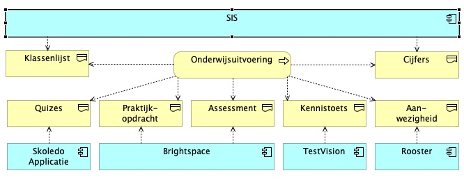

Het doel van de measure-fase is om te komen tot een meetplan. In dit hoofdstuk komen aan de orde: welke gegevens er beschikbaar zijn, welke gegevens er gebruikt gaan worden, wat de betrouwbaarheid is van de gevens en tenslotte hoe de gegevens verwerkt gaan worden.
2.1 Gegevens - verzamelen
In de grafiek hieronder staan, ter algemene informatie, een aantal gegevensbronnen weergegeven waarmee men tijdens het proces “onderwijsuitvoering” te maken heef.

Het lessenplan, onderdeel van de studiehandleiding, staat op Brightspace. Brightspace is ook het systeem waar de praktijkopdrachten worden ingeleverd en beoordeeld. Skoledo is de leverancier van de e-learnings. Skoledo levert wekelijks de voortgang van de studenten aan alsook tussentijdse resultaten. Het rooster geeft aan waar en wanneer de lessen plaatsvinden. Aanwezigheid wordt bijgehouden in een excel sheet. Aan het eind van de module vind met het docententeam een evaluatie plaats aan de hand van een “PDCA” formulier. Tenslotte worden de cijfers, zodra deze bepaald zijn, ingevoerd in SIS. SIS staat ook als input getekend omdat aan het begin van het blok wordt gechecked dat alle studenten die in SIS bij het vak geregistreerd staan, ook in Brightspace geregistreerd staan.
Het kernbegrip uit de doelstelling is de “doorlooptijd”. Meer specifiek: de doorlooptijd van de e-learnings.
Referentie (Skoledo, 2024)
De output van het proces (cyclustijd)
2.2 Meetplan
| Wat meten we | Waarom meten we | Hoe verzamelen we de gegevens | Wanneer verzamelen | Waar in het proces | Wie verzamelt ze |
|---|---|---|---|---|---|
| a | |||||
| b | |||||
| c | |||||
| d |
2.3 Gegevens - betrouwbaarheid
De gegevens v.w.b. de voortgang van de e-learnings is afkomstig van Skoledo. De gegevens worden wekelijks samengesteld en opgestuurd. Er worden door de ontvanger een paar checks gedaan: - Zijn de data oplopend - Is de voortgang deze week niet lager dan vorige week
2.4 Gegevens - verwerken
De gegevens zullen worden verwerkt met Excel.